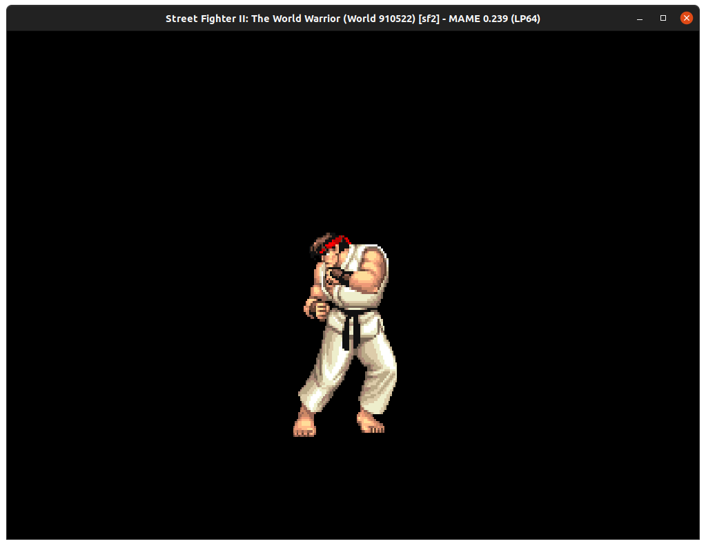
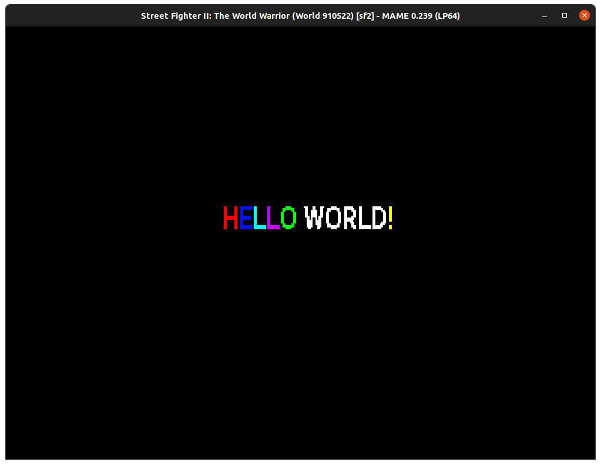

While I was studying Capcom's CPS-1, I found myself authoring many tools. I combined them together to make a SDK called ccps. The name is a portmanteau between cc, the C compiler and CP-System, the name of the machine before Capcom introduced the CPS-2 in 1993.
Building a game for a CPS-1 is a tedious process which requires to produce four sets of ROMs.

There are two CPUs (one running the game logic, and one taking care of the sound). Each CPU needs to be bootstrapped and their program compiled via different compilers. Both have a peculiar type of data interleaving across ROMs.
The game needs assets made of two sets of ROMs, one for the GFX and one for the SFX (sound samples). Both sets have their own type of interleaved. Additionally, music assets must be placed into the Z-80 ROM set.
And last but not least, each CPS-1 board is slightly different. Registers location can move and even register bit layout can change sometimes even between the same revision of a same game board.
The goal of ccps is to automate all of this. A game developer writes code for the game logic, produces GFX and SFX assets and then press "Enter" which results in a fully built game.
The design of ccps is strongly inspired of git. It is a single binary working with sub-commands like ccps build or ccps install.
The philosophy of ccps is to strive for simplicity and keep the "genuine window of interest" of a potential game developer open as long as possible. The core idea is to allow a programmer to see and hear the machine perform as fast as possible with as little effort as possible.
For the languages, the SDK supports 68000 ASM, Z-80 ASM and C.
Ideally the setup process would feature a single step involving downloading a pre-built executable. But we live in an era where binaries should not be trusted. As a result, ccps is built from the source code.
The full setup takes four lines.
$ git clone git@github.com:fabiensanglard/ccps.git $ cd ccps/ $ ./setup.sh $ ./makeAndInstall.sh
Note that setup.sh is a small script which downloads the 68000 compiler (gcc) and the Z80 compiler (sdcc).
$ cat setup.sh sudo apt install sdcc sudo apt install gcc-m68k-linux-gnu
At the time this article is published, only Linux and Windows (via WSL) are supported. If someone owns a Mac and wants to contribute a patch that uses brew or port, they are more than welcome to send a Pull Request.
To start playing with the CPS-1, the first sub-command to run is not "hello world" but "post" (power-on self-test) which generates the smallest possible programs to ensures the toolchain is working as expected.
$ mkdir ~/post $ cd ~/post $ ccps post -b sf2 $ find . ./cc/z80/crt0.s ./cc/z80/main.c ./cc/68000/crt0.s ./cc/68000/main.c
Only source code is generated. It ensures that CPUs will bootstrap, run, and talk to each other via the "latches".
Now that we have something to compile, it is time to build it. Building is also done via a single command mysteriously called build. The compilers are driven and the resulting blob of instructions are split into files according to the board target (in this case "sf2").
$ ccps build -b sf2 $ ls out sf2_29b.10e sf2_9.12a sf2e_30g.11e sf2e_35g.9f sf2e_38g.12f sf2_36b.10f sf2e_28g.9e sf2e_31g.12e sf2e_37g.11f
Each ROMs must be interleaved a certain way and ccps took care of it. As expected, no GFX and no SFX ROMs are generated.
To speed up the developement process, mame emulator is supported. The installation is done via a command audaciously named install.
Note that before we install, we need to have the board "sf2" in mame's roms folder. It is not provided here, just know that it is named sf2.zip and contains these files.
$ ccps install -d ~/mame/roms/sf2
Launching the game from mame GUI would trigger ROM SHA1 verification which would obviously fail. Using the command-line will result in a warning but works.
$ cd ~/mame
$ ./mame sf2
sf2e_30g.11e WRONG CHECKSUMS:
EXPECTED: CRC(fe39ee33) SHA1(22558eb15e035b09b80935a32b8425d91cd79669)
FOUND: CRC(d5314bf9) SHA1(af11e43fcc0e41784301c7f10ebb2451ed419484)
EXPECTED: ...
FOUND: ...
...

Because we indicated which board to target in the post command (ccps uses the same board names as found in video/ccps.cpp mame driver), the 68000 program automatically generated something interesting in the GFX ROMs (Ryu).
Sprite* s;
s = &sprites[0];
s->x = 220;
s->y = 100;
s->tile = 4;
s->attributes = 2 | 0x5 << 12 | 0x3 << 8;
sprites[1].attributes = 0xFF00; // Last sprite marker
The tile value is 4 which matches the upper left corner of Ryu sprite. The value 0x5 is the height of the sprite -1. The value 0x3 is the sprite width -1. 2 is the palette ID. Notice that CPS-1 uses a marker to indicate the last sprite tile (0xFF00).
On the Z-80 side, the program generated simply requests the OKI to play a samples one after another every second. As a result, the speaker players "Japan", "USSR", and so on.
Already a developer can play with the programs by using different GFX tile coordinates or request the Z-80 to play different OKI samples.
Once post is proven to work, we can use a second auto-generated project called hello world (sub-command hw).
$ mkdir ~/hw $ cd ~/hw $ ccps hw $ find . ./cc/z80/crt0.s ./cc/z80/main.c ./cc/68000/crt0.s ./cc/68000/main.c ./gfx/obj/hellworld.png ./sfx/hellworld.wav
This time, on top of programs for both CPUs we get two assets, an image hellworld.png and a sound sample hellworld.wav. Upon building, a full game is generated. The filenames are confusing (not by choice) but I swear it is all here.
$ ccps build -b sf2 $ ls out sf2-11m.5d sf2_19.12c sf2_36b.10f sf2-6m.4c sf2-9m.3d sf2e_35g.9f sf2-13m.4d sf2-1m.3a sf2-3m.5a sf2-7m.6a sf2e_28g.9e sf2e_37g.11f sf2-15m.6d sf2_29b.10e sf2-4m.5c sf2-8m.6c sf2e_30g.11e sf2e_38g.12f sf2_18.11c sf2-2m.3c sf2-5m.4a sf2_9.12a sf2e_31g.12e
Testing the game is done the same as with the "post" example.
$ ccps install -d ~/mame/roms/sf2 $ cd ~/mame && ./mame sf2
And hello world!

To help troubleshoot problems related to GFX, ccps is able to dump the GFXROM in human visible form.
ccps dumpgfx -b sf2
As discussed in a previous article[1], the GFX ROM is organized in "sheets". This is the format used when dumping.
In the dump above, the image helloworld.png from hw project was processed as a shape. It has been split in 16x16 tiles and each one of them was allocated on the sheet via a first-come first-serve allocator.
To draw a shape, the 68000 program must issue one draw command per tile.
void draw() {
setPalette(0, 2, &phelloworld);
int i = 0;
for (; i < helloworld.numTiles; i++) {
Sprite* s = &sprites[i];
GFXShapeTile* t = &(helloworld.tiles[i]);
s->x = 196 + t->x * 16;
s->y = 100 + t->y * 16;
s->tile = t->id;
s->attributes = 2; // Palette 2
}
sprites[i].attributes = 0xFF00; // Last sprite marker
}
Notice the name of the variables helloworld wich provide the tile coordinates and phelloworld which provides the palette colors. A header and a C file were generated automatically so a developer only has to write a simple loop.
For shape that are rectangular, the CPS-1 support "sprite" draw commands where a single tile is provided but with specified dimensions (unfortunately reducing the number of draw calls does not allow to exceed the MAX 256 tiles limit of the machine). Check again the Ryu drawing call in project post where a single tile is specified (0x04) but twenty-four are drawn.
To use sprites drawing call, the tiles must be located contiguous in sheep space.
To visualize the difference, we can ask help from Honda and duplicate it. It is featured in the gfx/obj directory twice. Once with filename honda.png and then with filename Honda.png (notice the capital).
Capitalized images are treated as Sprite by ccps and allocated as such. Notice upon dumping the ROM how the sheet shows that Honda.png was allocated properly, using upper left tile coordinate 0x00 and spreading four tile wide and seven tile tall.
On the contrary, the shape honda.png was allocated "linearly". This illustrate the trade-off between Sprites and Shapes. A sprite is rectangular, is more demanding in terms of allocation, and waste tiles if they are fully transparent but it requires only one draw call.
Shapes on the other side have no allocation constraints and allow to discard transparent tiles but the mechanics of rendering them is slightly more difficult.
In practice, Capcom games used Sprites only for splash images or truly rectangular images. 90% of draw calls in Final Fight and Street Fighter II are Shapes.
ccps supports ADPCM compression to feed the OKI MSM6295. All .wav files found in the sfx directory are processed and placed in the OKI ROM database.
Like with the GFX ROM, ccps features a debugging tool which can be summoned via dumpsfx sub-command. Along with the ID of each samples, it allows to assess compression quality changes.
Original sound: 16-bit, 48,000 Hz, 1,584,244 bytes:
Prepared for compression: 16-bit, 7,575Hz, 250,140 bytes:
ADPCM Compressed: 4-bit, 7575Hz, 62,535 bytes:
To help understanding the machine and the SDK better, I am releasing along with it a book named "The Book of CP-System"[2].
ccps is far from being "done". It is an open source project with many "low-hanging fruits" ready to welcome contributors.
The big omission is the lack of music support. It is not very hard to do since one only has to write a VGM parser (preferably authored with the awesome DefleMask Tracker) to extract YM2151 instructions and put then into a .c file. Another thing I haven't had the time to add is support for background layers.
Most missing features are not a lot of code to write but someone has to do it. Check out the Github project page[3] to find a list of issues/bugs to work on if you are interested.
| ^ | [1] | Street Fighter II, paper trails |
| ^ | [2] | The Book of CP-S |
| ^ | [3] | Github: CCPS, a CPS-1 SDK |